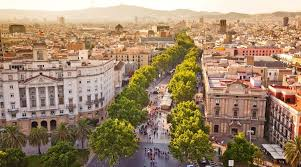

SPAIN
Spain, a country on Europe’s Iberian Peninsula, includes 17 autonomous regions with diverse geography and cultures. Capital city Madrid is home to the Royal Palace and Prado museum, housing works by European masters. Segovia has a medieval castle (the Alcázar) and an intact Roman aqueduct. Catalonia’s capital, Barcelona, is defined by Antoni Gaudí’s whimsical modernist landmarks like the Sagrada Família church.
BARCELONA
The cosmopolitan capital of Spain’s Catalonia region, is known for its art and architecture. The fantastical Sagrada Família church and other modernist landmarks designed by Antoni Gaudí dot the city. Museu Picasso and Fundació Joan Miró feature modern art by their namesakes. City history museum MUHBA, includes several Roman archaeological sites.
MADRID

Spain's central capital, is a city of elegant boulevards and expansive, manicured parks such as the Buen Retiro. It’s renowned for its rich repositories of European art, including the Prado Museum’s works by Goya, Velázquez and other Spanish masters. The heart of old Hapsburg Madrid is the portico-lined Plaza Mayor, and nearby is the baroque Royal Palace and Armory, displaying historic weaponry.